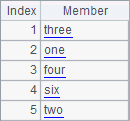
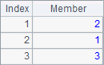
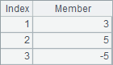
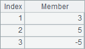
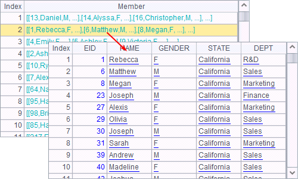

3.6.3 switch function
Besides find and pfind functions, switch function also searches for records in the table sequence by automatically using the index table created for the primary key values. For example:
|
|
A |
|
1 |
=file("D:/files/txt/PersonnelInfo.btx") |
|
2 |
=A1.import@b() |
|
3 |
=A1.import@b() |
|
4 |
=demo.query("select * from STATES") |
|
5 |
=now() |
|
6 |
>A2.(State=A4.select@1(ABBR:A2.State)) |
|
7 |
=interval@ms(A5,now()) |
|
8 |
=now() |
|
9 |
>A3.switch(State,A4:ABBR) |
|
10 |
=interval@ms(A8,now()) |
Both A2 and A3 contain personnel information imported from the following bin file PersonnelInfo:

A4 contains states information:

In both A6 and A9, State field of the PersonnelInfo file is switched into corresponding states information. A6 uses select@1 function while A9 uses switch function. A7 and A10 compute respectively the time the two methods take:
 

After the cellset code is executed, values of A2 and A3 are same:

State field values have been converted into corresponding records in states table.
Before switch function is executed, an index table will also be created for the corresponding field in the other table sequence. In this example, an index table is created for the ABBR field of A4¡¯s states table to increase the matching efficiency. It¡¯s good for you to learn to use the function properly when a foreign key field is generated to reference records.